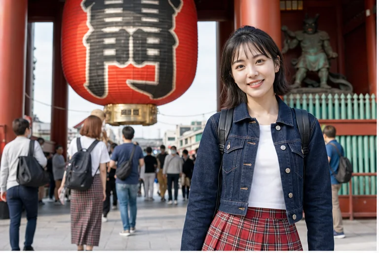
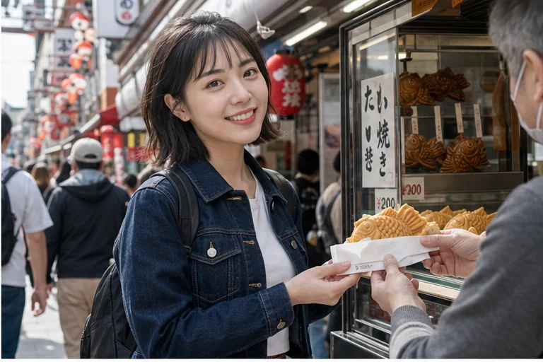

淺草真的好熱鬧，好像每一條街都在跟我說「歡迎來東京玩！」站在雷門前面的時候，人潮很多，可是那種旅行感也剛好很滿。大家拿著相機、買著小點心、往寺院方向慢慢走，整個畫面都亮亮的。
我最喜歡仲見世通的小熱鬧。剛烤好的鯛魚燒、可愛的和風小物、遠遠露出來的晴空塔，都像東京送我的小禮物。今天還跟好朋友在人群裡笑到停不下來，明明只是很普通的一瞬間，卻突然變得很值得收藏。
如果第一次來東京，我覺得淺草很適合放進行程裡。它有傳統、有城市感，也有一點點熱鬧到可愛的混亂。走完一圈會覺得：啊，這就是東京呀。
Tokyo / 淺草寺
淺草真的好熱鬧，好像每一條街都在跟我說「歡迎來東京玩！」站在雷門前面的時候，人潮很多，可是那種旅行感也剛好很滿。大家拿著相機、買著小點心、往寺院方向慢慢走，...



淺草真的好熱鬧，好像每一條街都在跟我說「歡迎來東京玩！」站在雷門前面的時候，人潮很多，可是那種旅行感也剛好很滿。大家拿著相機、買著小點心、往寺院方向慢慢走，整個畫面都亮亮的。
我最喜歡仲見世通的小熱鬧。剛烤好的鯛魚燒、可愛的和風小物、遠遠露出來的晴空塔，都像東京送我的小禮物。今天還跟好朋友在人群裡笑到停不下來，明明只是很普通的一瞬間，卻突然變得很值得收藏。
如果第一次來東京，我覺得淺草很適合放進行程裡。它有傳統、有城市感，也有一點點熱鬧到可愛的混亂。走完一圈會覺得：啊，這就是東京呀。